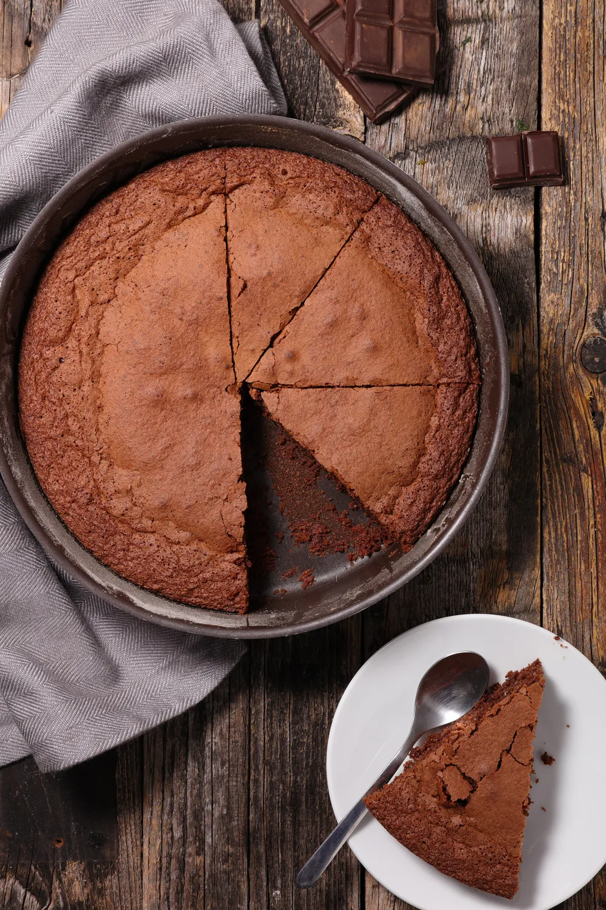
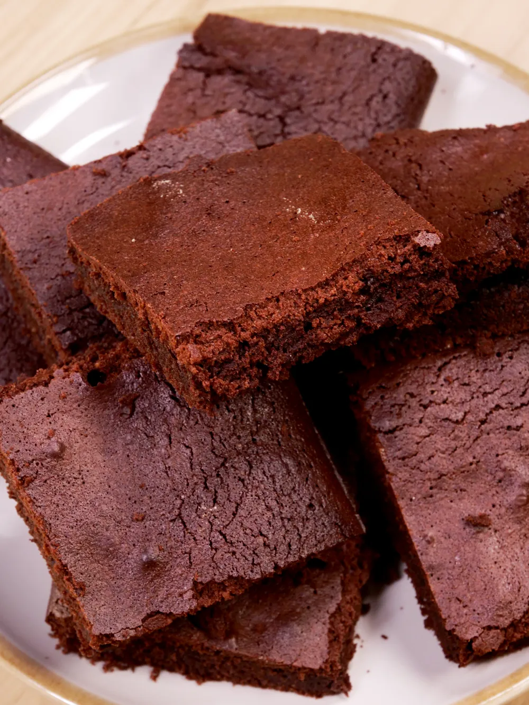
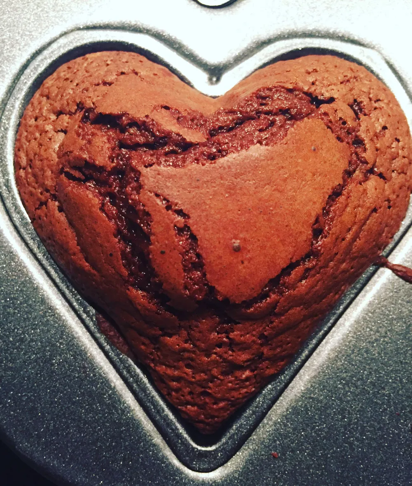

Gâteau au chocolat
  Ingrédients Préparation
Nombre de personne:
Ingrédients
- 200 g de chocolat pâtissier
- 100 g de beurre + une noix pour le moule
- 50 g de farine
- 100 g de sucre en poudre
- 3 œufs
Ustensiles
- grille à pâtisserie
- moule
- 1 Four
- casserole
Péparation
- échauffez votre four à 180°C (thermostat 6). Dans une casserole, faites fondre le chocolat et le beurre coupé en morceaux à feu très doux.
- un saladier, ajoutez le sucre, les œufs, la farine. Mélangez.
- le mélange chocolat/beurre. Mélangez bien.
- à l'aide d'une feuille de papier essuie-tout et farinez votre moule puis y versez la pâte à gâteau.
- cuire au four environ 20 minutes.
- A la sortie du four le gâteau ne paraît pas assez cuit. C'est normal, laissez-le refroidir puis démoulez-le.
recette pour 6 personnes